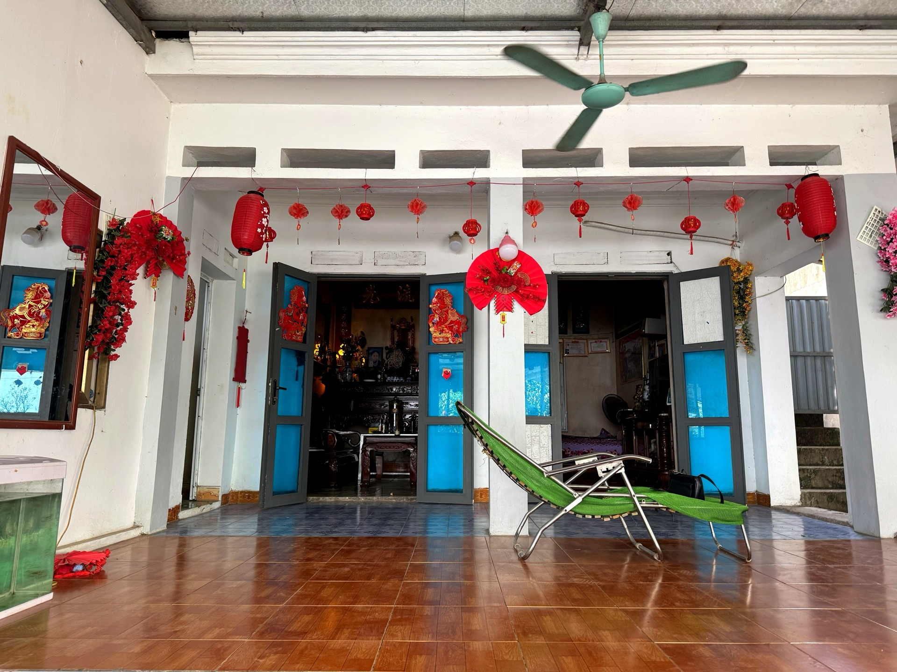

Loại hìnhTypeType
Homestay · lưu trúHomestay & AccommodationHomestay et hébergement

Homestay Cao Minh Kế toạ lạc tại thôn Gốc Báng – một trong những thôn giữ được nét sinh hoạt cộng đồng đặc trưng của người Mường tại Mường Cốc. Điểm đến này nổi bật với lợi thế đặc biệt: chủ nhà ông Cao Minh Kế là người Mường bản địa, thông thạo tiếng Mường và am hiểu sâu sắc phong tục, truyền thuyết và đời sống văn hoá của cộng đồng qua nhiều thế hệ.
Ngôi nhà xây theo kiểu mới nhưng không gian đón khách được bố trí chu đáo, tạo điều kiện để du khách nghỉ ngơi thoải mái và có những cuộc trò chuyện thực sự với người dân địa phương. Với khả năng kể chuyện người Mường bằng ngôn ngữ và trải nghiệm sống thực, chủ nhà là một "hướng dẫn viên cộng đồng" tự nhiên – điều không thể tìm thấy ở bất kỳ tài liệu sách vở nào.
Homestay Cao Minh Kế phù hợp cho du khách muốn lắng nghe câu chuyện về văn hoá Mường từ chính người trong cuộc, trong không khí bình dị và chân thành của gia đình người Mường thôn Gốc Báng.
Homestay Cao Minh Ke is located in Goc Bang village – one of the villages that preserves the distinctive community life of the Muong people in Muong Coc. This destination stands out with a special advantage: host Mr. Cao Minh Ke is an indigenous Muong, fluent in the Muong language and deeply knowledgeable about the customs, legends, and cultural life of the community across generations.
The house is newly built, yet the guest reception area is thoughtfully arranged, allowing visitors to rest comfortably and engage in genuine conversations with local residents. With the ability to tell Muong stories through language and real-life experiences, the host is a natural "community guide" – something that cannot be found in any textbook or document.
Homestay Cao Minh Kế is perfect for visitors eager to hear stories of Muong culture directly from insiders, within the simple and sincere atmosphere of a Muong family home in Gốc Báng hamlet.
Le Homestay Cao Minh Ke est situé dans le village de Goc Bang – l'un des villages qui préserve la vie communautaire distinctive du peuple Muong à Muong Coc. Cette destination se distingue par un avantage particulier : l'hôte, M. Cao Minh Ke, est un Muong indigène, parlant couramment la langue Muong et profondément connaisseur des coutumes, légendes et de la vie culturelle de la communauté à travers les générations.
La maison est de construction récente, mais l'espace d'accueil des hôtes est aménagé avec soin, permettant aux visiteurs de se reposer confortablement et d'engager de véritables conversations avec les habitants. Avec sa capacité à raconter des histoires Muong à travers la langue et des expériences de vie authentiques, l'hôte est un « guide communautaire » naturel – une richesse introuvable dans les livres ou les documents.
Homestay Cao Minh Kế est parfait pour les visiteurs désireux d'entendre des récits de la culture Muong directement des habitants, dans l'atmosphère simple et sincère d'une maison familiale Muong dans le hameau de Gốc Báng.
| Lưu trú homestayHomestay accommodationHébergement chez l'habitant | Phòng nghỉ trong nhà gia đình, theo đặt trướcHomestay accommodation, by prior reservation.Hébergement chez l'habitant, sur réservation préalable. |
| Giao lưu văn hoá người MườngMuong cultural exchangeÉchange culturel Muong | Nghe kể chuyện phong tục, truyền thuyết, đời sống người Mường bằng tiếng Mường và tiếng ViệtImmerse yourself in stories of Muong customs, legends, and daily life, told in both Muong and Vietnamese.Plongez dans les récits des coutumes, légendes et de la vie quotidienne Muong, racontés en langues Muong et vietnamienne. |
| Ẩm thực địa phươngAuthentic Local FlavorsSaveurs locales authentiques | Bữa ăn gia đình theo đặt trướcFamily meals by reservation.Repas familiaux sur réservation. |
| Tìm hiểu tiếng MườngDiscover the Muong LanguageInitiation à la langue Muong | Học từ vựng, câu chào hỏi cơ bản theo tiếng MườngLearn basic Muong vocabulary and greetings.Apprenez le vocabulaire et les salutations de base en langue Muong. |
| Đón khách đoànGroup WelcomeAccueil de groupes | Nhóm nhỏ theo đặt trướcSmall groups by prior arrangementPetits groupes sur arrangement préalable |
Homestay Cao Minh Kế hướng tới trở thành điểm giao lưu văn hoá đặc sắc trong tuyến trải nghiệm Mường Cốc – nơi du khách có thể nghe câu chuyện người Mường trực tiếp từ người trong cuộc, bằng chính ngôn ngữ và ký ức sống của cộng đồng bản địa. Gia đình mong muốn phát triển thêm các buổi sinh hoạt văn hoá cộng đồng kết hợp lưu trú, góp phần gìn giữ và truyền đạt tiếng Mường, phong tục Mường cho các thế hệ tiếp theo và cho du khách từ khắp nơi. Điểm đến Du lịch cộng đồng Mường Cốc, Xã Mỹ Đức – Thành phố Hà NộiHomestay Cao Minh Kế aims to become a unique cultural exchange point on the Mường Cốc experience route, where visitors can hear Mường stories directly from locals, in their own language and living memories. The family wishes to develop more community cultural activities combined with accommodation, helping to preserve and transmit the Mường language and customs to future generations and to visitors from all over. A Mường Cốc Community Tourism Destination, My Duc Commune – Hanoi City.Le Homestay Cao Minh Kế vise à devenir un point d'échange culturel unique sur l'itinéraire d'expérience de Mường Cốc, où les visiteurs peuvent entendre les histoires Mường directement des habitants, dans leur propre langue et à travers les souvenirs vivants de la communauté. La famille souhaite développer davantage d'activités culturelles communautaires combinées à l'hébergement, contribuant ainsi à préserver et à transmettre la langue et les coutumes Mường aux générations futures et aux visiteurs du monde entier. Une destination de tourisme communautaire de Mường Cốc, commune de My Duc – ville de Hanoi.